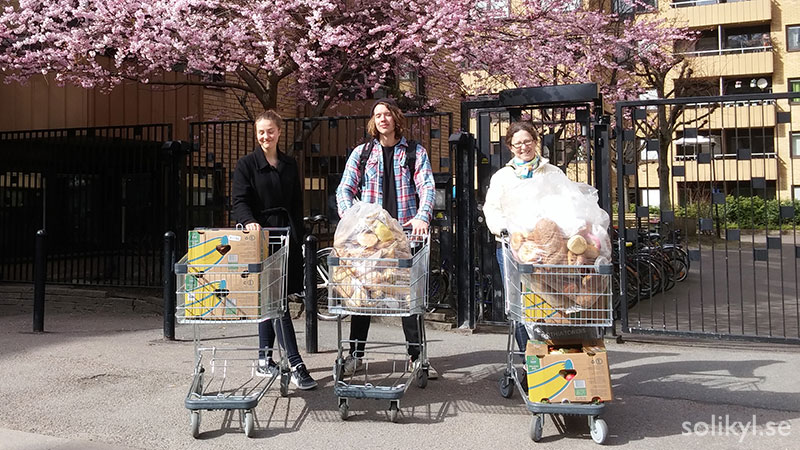

# The foodsaving grassroots movement _the authors_ --- # Agenda 1. Introduction 2. Deep-dive 3. ... --- # Introduction _nothing here yet_ --- # User story:<br>foodsharing Östersund <div style="text-align: center"> <img src="./images/TeddyFlight.jpg" height="400"/> </div> ??? - Teddy from Germany is a very active foodsaver going to Sweden for her studies - She wants to spread the idea of foodsaving in her new city Östersund (50k inhabitants) - She holds two info events to gather like-minded people (only 4-6 people show up) - She creates two facebook groups to gather interested people and fellow foodsavers respectively - She contacts stores to build up cooperations - She contacts us and asks for help setting up a group on Karrot - As soon as the cooperations are established the stores and pickups are put up on Karrot and people can sign up there --- # What Karrot doesn't do <div style="text-align: left"> <img src="./images/computerPerson.jpg" width="400"/> </div> <div style="text-align: center"> <b>vs.</b> </div> <div style="text-align: right">  </div> ??? - Most work happens offline! - Karrot doesn't help you find potential foodsavers - Karrot doesn't help you establish cooperations with stores - Karrot doesn't help you get off your chair to actually do a pickup - Karrot doesn't help you distribute huge amounts of saved food --- # Yay community! :D <div style="text-align: center"> <img src="./images/yayCommunity.jpg" width="640"/> </div> ??? - You need people working together for this to function - Everything is more fun if you do it together with friends - What is more fun is more durable, as you'll keep on doing it ---